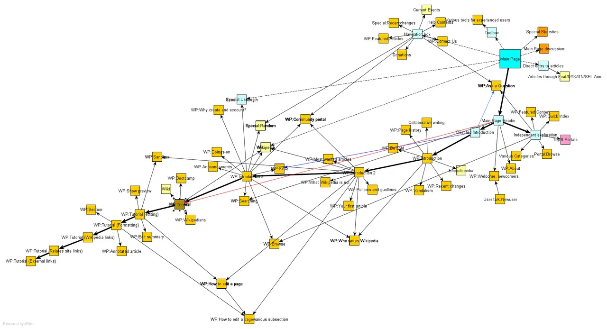

短答
XML Sitemap 列出你提供给抓取的 URL。HTML 站点地图是一页普通链接。
树状图显示的是靠链接发现，那是 HTML 的想法。XML 文件是一份清单：loc，以及可选的 lastmod。爬虫可以忽略清单里的 URL，如果有链接指向，它也可以获取不在清单里的 URL。SEO 健康寻找清单、规范 URL 和链接之间的不一致。
定义
索引不一致就是这种分歧：sitemap 里的 URL 会重定向、被 noindex，或重要的规范 URL 不在 sitemap 里。sitemap 协议也写明了单个文件的大小限制。这些限制是规范约束，不是分数。达到限制意味着要拆文件。它并不意味着站点以有用的方式增长了。
抓取怎样遇到这条规则
把 sitemap URL 与规范的、可索引的 URL，以及链接真正发现的 URL 进行比较。
lastmod 只有在文档真的变了才有用，而不是每次构建都由脚本写成今天。虚假的新日期是这份清单的健康缺陷。HTML 站点地图在它们是指向重要页面的真实锚点时才有帮助。只存在于 XML 文件、没有内链的页面，连接仍然很弱。孤立页发现仍然是链接问题。

要检查什么
- 会重定向、404 或带有 noindex 的 sitemap URL
- 不在 sitemap 里的规范 URL
- 文档没变却改变的 lastmod
- 即使被列出也没有内链的重要页面
- 写入记录的一条不一致 URL
一个结构示例
XML Sitemap 列出 /products/legacy-valve，它 301 到 /products/valve，却漏掉了当前的规范 URL。HTML 页脚链接到当前 URL。不一致的是 sitemap 那一行。更新被重定向 URL 的 lastmod 并不能修好它。修复是列出规范 URL 并去掉退役的那条。
它不声称什么
sitemap 不保证索引、排名或引用。
Mika Visibility 把它归到哪里
Mika Visibility 把可抓取性放在 SEO 健康：robots 规则、状态码，以及爬虫能跟着走的路径。断开的路径和被挡住的模板是健康发现。缺主题不是。GEO 仍然依赖爬虫真正能到达的页面，但到得了并不等于替买家写好了答案。
树状图说明的是链接发现，以免被误认为 XML 清单。
常见问题
HTML 站点地图和 XML Sitemap 有何不同？
XML Sitemap 列出你提供给抓取的 URL。HTML 站点地图是一页普通链接。
审计应该做哪一种比较？
把 sitemap URL 与规范的、可索引的 URL，以及链接真正发现的 URL 进行比较。
sitemap 能保证索引吗？
sitemap 不保证索引、排名或引用。
下一步
做一次结构化的 SEO + GEO 审计，查看健康发现、增长缺口和可以执行的蓝图。
更清晰的实体、答案、证据和上下文，会让页面更容易被理解与引用。任何回答产品中的结果都不作保证。